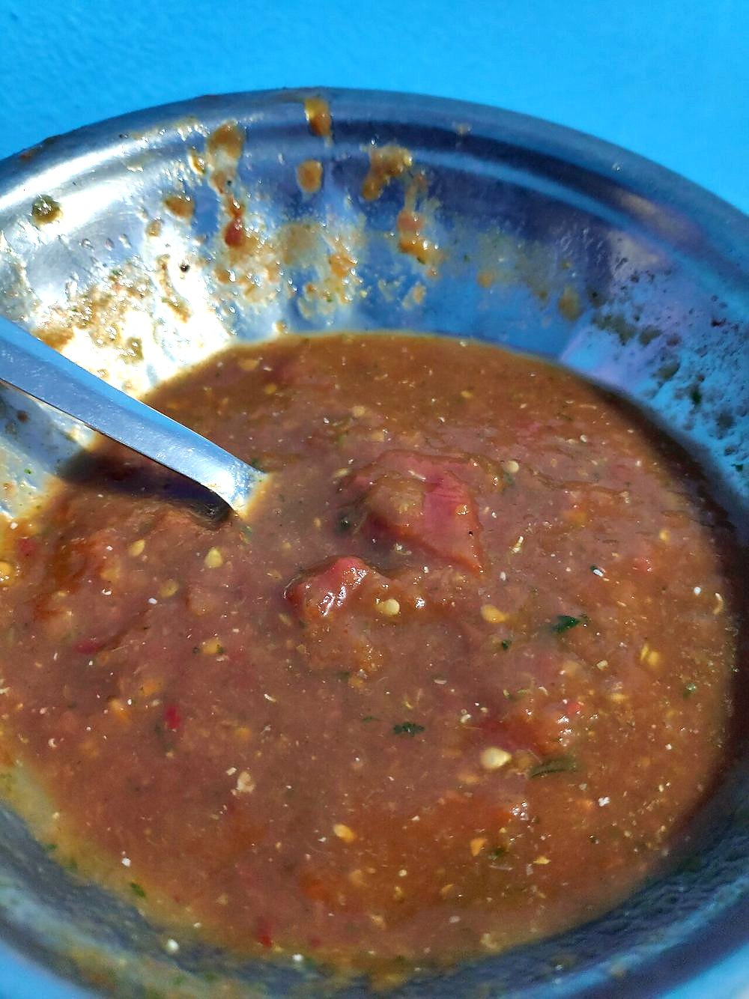

Prep15 min
Cook10 min
Active25 min
Serves4
Difficultyeasy
Contains: mustard
Checked against the ingredient list for ten allergens: milk, egg, fish, crustaceans, tree nuts, peanuts, sesame, mustard, soy and gluten. Brands vary, so read the label on anything new to you.
Ingredients
Quantities for 4.
- 4, roasted whole over a flame Tomato
- 6, roasted Green Chilli
- 8 cloves, roasted in their skins Garlic
- a large handful Coriander Leaves
- 2 tbsp, raw Mustard Oil
- 1/2 Lemonoptional
- to taste Salt
Cookware
stovetop
Before you start
- Silbatta is the stone and roller. A blender gives you a smooth sauce; the stone gives you a chutney with texture, which is the whole difference.
- If you must use a blender, pulse two or three times only.
Method
- Char the tomatoes, chillies and unpeeled garlic directly over a flame until blackened and blistered.
- Rest them under a cloth for 5 minutes, then rub off the burnt skins. Do not rinse them.Rinsing washes away the smoke, which is the point of roasting.
- Crush the garlic and chillies first with the salt, then work in the tomatoes.
- Add the coriander and crush briefly so it is bruised, not pulped.
- Beat in the raw mustard oil and sharpen with lemon if the tomatoes were sweet.
Storage
Keeps 3 days refrigerated. The raw garlic strengthens overnight. Serve at room temperature with litti or rice.
Nutrition Medium estimate
Low protein: 2 g a serving, 7% of the calories
| Per serving144 g | Per 100 g | |
|---|---|---|
| Calories | 96 kcal | 67 kcal |
| Protein | 1.6 g | 1 g |
| Carbohydrate | 7.5 g | 5 g |
| of which sugars | 3.7 g | 3 g |
| Fibre | 1.7 g | 1 g |
| Fat | 7.3 g | 5 g |
| of which saturated | 0.9 g | 1 g |
| of which unsaturated | 5.8 g | 4 g |
Ingredients given to taste count as zero, so the real figures run a little higher. Estimated from raw ingredients using USDA FoodData Central.
Times, yields, allergens and nutrition are guidance. Use your own judgement on doneness and on storing. More in About.